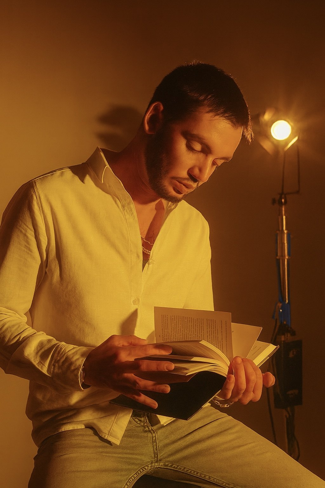
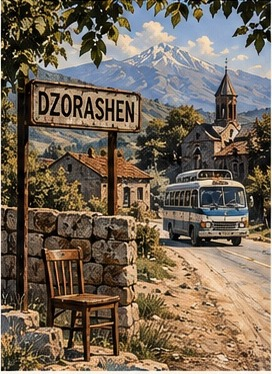
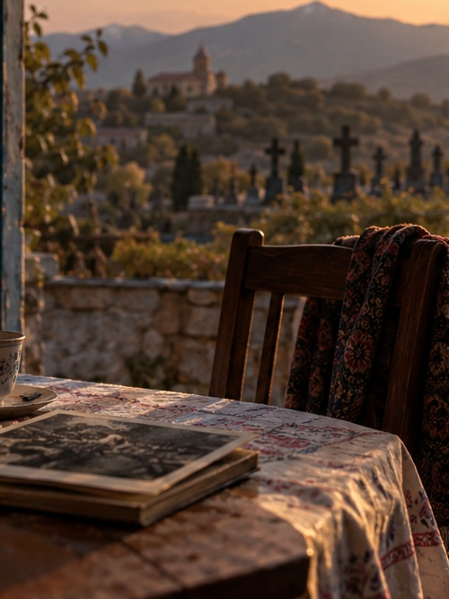
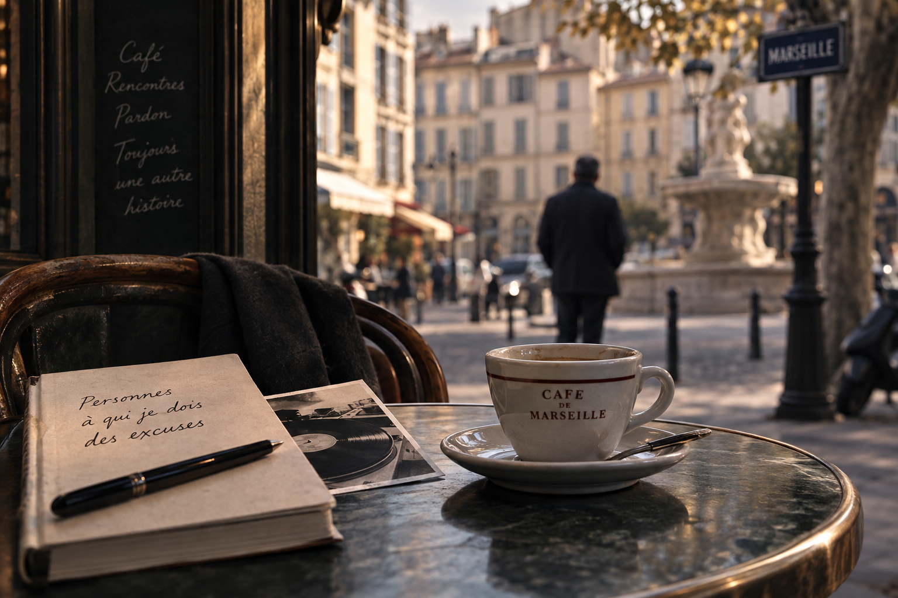

01
Последнее слово
Старый печатник, угасающая память и спасённый из прошлого корректурный оттиск возвращают простой вопрос: что в действительности остаётся от человеческой жизни, когда исчезают слова?
Читать по-русски →
ПИСАТЕЛЬ · ЛИТЕРАТУРНЫЙ ПЕРЕВОДЧИК
Рассказы о памяти, идентичности, одиночестве, душевной хрупкости, диссоциации и невидимых трещинах повседневной жизни — там, где реальность порой незаметно сдвигается в сторону странного. Новые рассказы публикуются регулярно.

ПРОИЗВЕДЕНИЯ
Оригинальный язык каждого текста указан на его странице. Русские переводы добавляются постепенно.
Старый печатник, угасающая память и спасённый из прошлого корректурный оттиск возвращают простой вопрос: что в действительности остаётся от человеческой жизни, когда исчезают слова?
Читать по-русски →В деревне с тремястами жителями один человек, которого никто не может найти, каким-то образом не даёт исчезнуть школе, амбулатории и автобусному маршруту. Чиновница, приехавшая проверить одну цифру, обнаруживает, что существование человека порой выходит за пределы одного тела.
Читать по-русски →
В восемьдесят три года Ануш объявляет, что умрёт во вторник. Дети начинают возвращаться к ней неделя за неделей, пока предсказание смерти не превращается в семейный ритуал — и, возможно, во что-то гораздо более живое.
Русский перевод готовится
В пятьдесят один год Бернар решает попросить прощения у тех, кого, как ему кажется, он когда-то обидел. Но, продвигаясь по списку, он понимает: извинение не всегда исправляет то, что, как нам кажется, было сломано, а самые важные долги порой оказываются совсем рядом — и именно их труднее всего заметить.
Русский перевод готовится
В двадцать три года Милан почти не покидал Прагу. Анонимный железнодорожный билет, найденный за стойкой отеля, ведёт его из Вены в Любляну, затем в Триест — пока ему не приходится выбирать между возвращением домой и дорогой, которую впервые никто не выбирает за него.
Русский перевод готовится«Переводить, писать — значит искать то, что сохраняется, переходя из одного языка в другой, из одной памяти в другую, из одной жизни в другую.»
ПЕРЕВОДЫ
Литературный перевод — не просто перенос текста с одного языка на другой. Это способ услышать то, что слова несут в себе: эпоху, голос, память.
Французский · Армянский · Русский · Английский
ОБ АВТОРЕ
Эмиль Маргарян родился в Ереване и живёт во Франции. Его проза рождается на пересечении языков, памяти и чувства принадлежности к месту и культуре.
Он изучал французскую литературу и филологию в Армении, затем литературный перевод и межкультурную коммуникацию в Экс-ан-Провансе; сегодня он совмещает собственное литературное творчество с работой переводчика.
В своих рассказах он обращается к памяти, исчезновению, одиночеству, языку и порой абсурдным механизмам, с помощью которых человек пытается придать смысл собственному существованию.
НОВОСТИ
Здесь будут появляться самые свежие рассказы и литературные проекты.
Участие в конкурсах, отборы и литературные события.
Встречи и выступления о литературе, переводе и новых формах письма.
КОНТАКТЫ